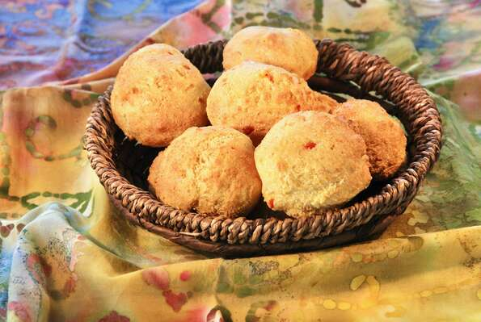

Air Fryer Hush Puppies

Description
Forget about deep frying, and give your hush puppies a light update
using an air fryer. They are just a bit denser in textuer than deep
frying and look for a subtle hint of heat. they're perfect side-kick
to fried fish or shrimp but they're equally good with drizzle of honey.
Ingredients
- nonfat cooking spray
- 1 cup yellow cornmeal
- 3/4 cup all purpose flour
- 1 1/2 teaspoons baking powder
- 1/2 teaspoon salt
- 1/2 teaspoon cayenne pepper
- 1/2 teaspoon garlic powder
- 2 tablespoon minced onion
- 2 tablespoon minced green bell pepper
- 3/4 cup low-fat buttermilk
- 1 large egg
Steps
- Preheat an air fryer to 390 degrees F (198 degrees C)
according to manufacturer's instructions. Line the bottom
of the air fryer basket with aluminum foil and spray with
nonfat cooking spray.
- Stir cornmeal, flour, baking powder, salt, cayenne,
and garlic powder together in a large bowl. Mix in onion
and bell pepper.
- Whisk buttermilk and egg together in a separate bowl.
Stir into cornmeal mixture. Let mixture rest for 5 minutes.
- Drop cornmeal mixture into the foil-lined basket using a
2-tablespoon cookie scoop, making sure not to have them
touching each other. Coat with nonfat cooking spray.
- Cook in the preheated air fryer until golden brown,
crispy, and cooked through, 9 to 10 minutes. Serve hot.
Home